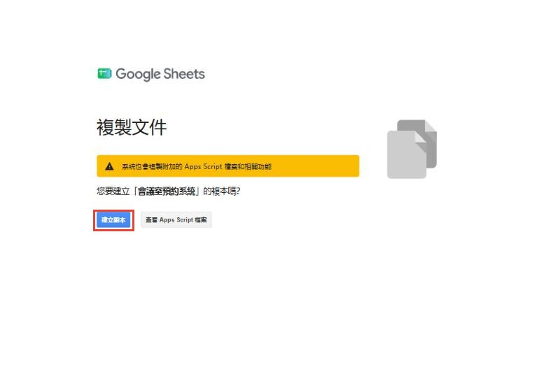
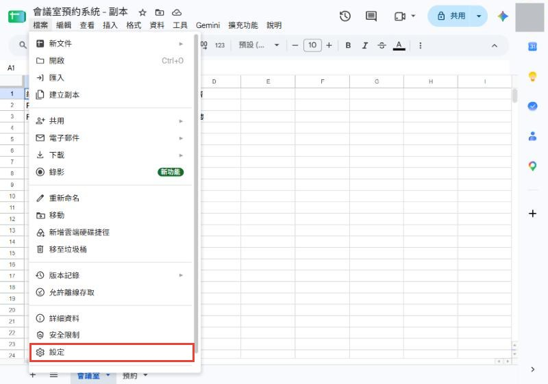
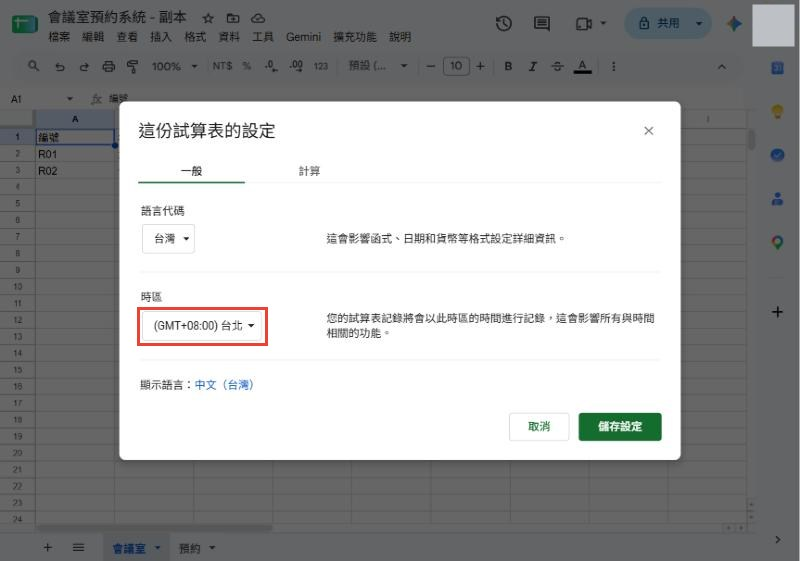
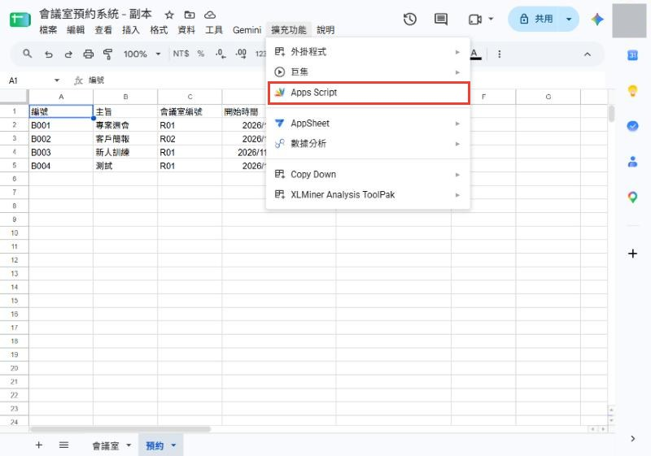
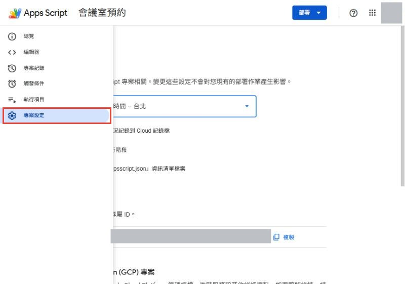
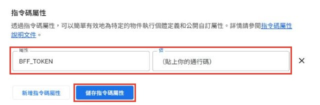
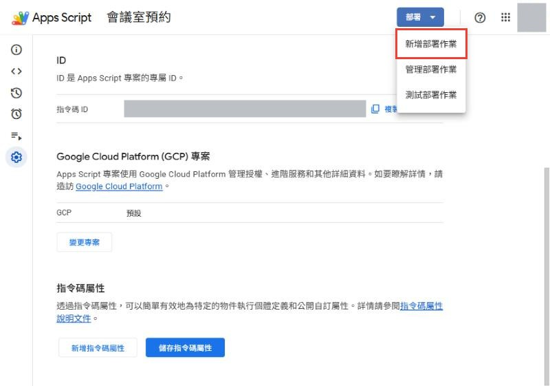
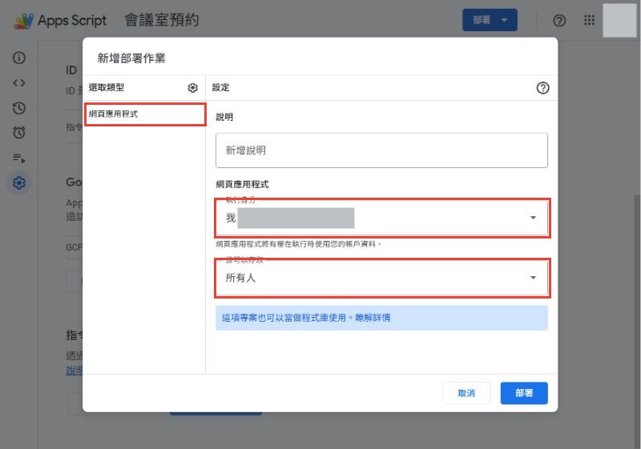
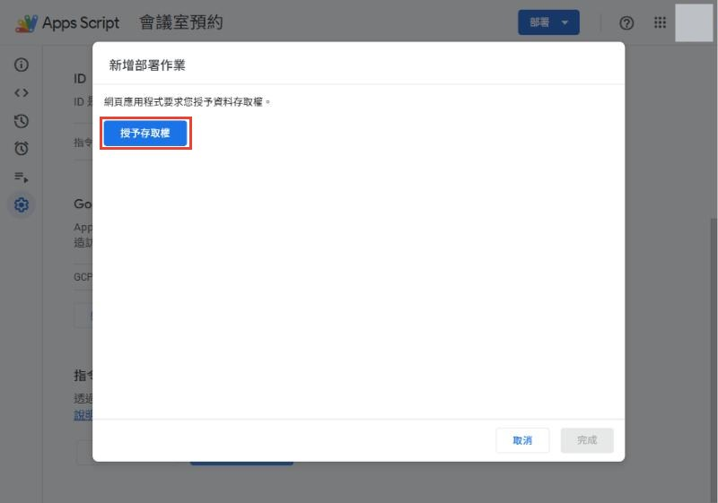

概覽
這個階段用 Google 試算表當資料來源，做出一個會議室預約看板。
| 段落 | 做什麼 | 誰動手 |
|---|---|---|
| 準備 A～D | 複製試算表範本、產生通行碼、部署 Apps Script、填 bff/.env | 你 |
| 第一步：查詢 | 選日期、看那天的預約 | AI 寫程式，你驗收 |
| 第二步：新增、修改、刪除 | 在看板上新增、修改、刪除預約 | AI 寫程式，你驗收 |
| 自我練習 選做 | 自己建試算表；不用指令，自己請 AI 做 BFF | 你 |
查詢和新增修改刪除分兩步做：先把查詢做好、驗收通過，再加上新增、修改、刪除。程式一次只多一點，比較看得懂，出錯也比較好找。
需要
- 一個 Google 帳號（個人 Gmail 最保險；公司或學校帳號可能被管理者關掉 Apps Script）
- 已安裝 Node.js 22.9 以上（終端機執行
node --version確認） - 學員起始包，以及 Claude Code（或 Codex）
A. 複製試算表範本
- 打開範本並建立副本 ↗
按「建立副本」。範本已經含有資料和 Apps Script，副本會放在你自己的雲端硬碟。
- 確認 檔案 → 設定 → 時區 是 (GMT+08:00) 台北。


- 確認「預約」的開始、結束時間顯示成日期時間（例如
2026/11/24 9:00:00）。如果顯示成小數，選取那兩欄，格式 → 數值 → 日期時間。
範例預約用了 =TODAY() 公式，所以每天打開都會是「今天」和「明天」的預約，方便練習。想知道試算表和 Apps Script 是怎麼建出來的，可以做最後的「自我練習一」。
B. 產生通行碼
通行碼是 BFF 和 Apps Script 之間的「暗號」：BFF 呼叫時要帶上，Apps Script 對了才回資料。
- 在你自己的終端機（Windows：PowerShell；Mac：終端機）執行下面這行，會印出一長串亂數，這就是你的通行碼：
node -e "console.log(crypto.randomUUID() + crypto.randomUUID())"不要請 AI 幫你執行這行：AI 執行的指令，輸出會留在對話紀錄裡。
- 在試算表選 擴充功能 → Apps Script。

- Apps Script 左側按「專案設定」（齒輪）→ 最下方「指令碼屬性」→「新增指令碼屬性」：

按「儲存指令碼屬性」。屬性 BFF_TOKEN值 剛剛那串通行碼 
圖中的值只是示意，請貼你自己的通行碼。
C. 部署成網頁 API
- Apps Script 右上角 部署 → 新增部署作業。

- 左邊齒輪選「網頁應用程式」。
- 執行身分：我；誰可以存取：所有人。

「我」後面會顯示你的 Gmail，圖中已遮住。 - 按「部署」。第一次會要求授權，先按「授予存取權」：

這是因為這支程式是你自己的，還沒送 Google 審核；它只會讀寫你這份試算表的「會議室」「預約」兩張工作表。 - 複製「網頁應用程式」網址（結尾是
/exec）。
「所有人」的意思是：知道網址的人都能呼叫。所以才需要通行碼：沒有通行碼的呼叫，只會得到 unauthorized。
D. 填寫 bff/.env
- 把起始包的
bff/.env.example複製一份，改名為bff/.env（同一個資料夾）。 - 填入（等號後面直接接值，不用加引號）：
這一行 填什麼 SHEET_API_URL=剛剛的 /exec網址SHEET_API_TOKEN=你的通行碼 - 存檔。
為什麼通行碼放在 .env
通行碼放在 .env，是為了不寫進程式碼、不跟著程式上傳到 git，也不留在對話紀錄裡（對話內容會送到雲端）。以後在公司接正式系統的密碼，也是這樣處理。
程式執行時才從 .env 取得通行碼，所以 AI 寫程式不需要知道它；起始包也已經請 AI 不要讀 .env。網址、工作表名稱、欄位名稱不是秘密，直接告訴 AI 沒關係。
第一步：請 AI 做查詢
做出來的樣子：在網頁選一個日期、按「查詢」，看到那天所有會議室預約，依開始時間排序。
- 用 Claude Code 打開起始包資料夾（桌面 App 的 Code 分頁 → 選擇這個資料夾）。
- 輸入：
/bff-sheet-query
Codex 使用者：把起始包提示詞/1_查詢.md的內容整份貼上。 - AI 會先問你三件事：準備 A～D 做完了嗎、試算表有今天的預約嗎、Node 版本對嗎。都是就回答「是」。
- AI 開始寫程式（時間依電腦和 AI 速度而定）。它每寫完一個檔案會說明那個檔案負責什麼，邊看邊問沒關係。
- AI 寫完會告訴你下一步：在
bff資料夾執行npm start，打開 http://localhost:4000。
驗收：查詢
輸入 /bff-verify，選「查詢」（Codex：貼上 提示詞/驗收.md）。AI 會一次給你一個動作，你自己操作、回報結果，再把結果寫進起始包的 驗收檢核表/1_查詢.md。
你會做的 5 件事
| # | 操作 | 應該看到 |
|---|---|---|
| 1 | 查今天 | 「專案週會」「客戶簡報」，依開始時間排序 |
| 2 | 查明天 | 「新人訓練」 |
| 3 | 查一個沒有預約的日期 | 「這天沒有預約」 |
| 4 | 在試算表「預約」加一列今天的預約，回網頁再查 | 新的那筆出現，不用重啟 BFF |
| 5 | 用瀏覽器開發者工具送一個錯的日期（AI 會給你指令） | DATA-422、invalid_date，而且有 requestId |
第二步：請 AI 做新增、修改、刪除
做出來的樣子：看板上方多一個「新增預約」表單；每一筆預約多「修改」「刪除」按鈕；時段和同一間會議室的其他預約重疊時，會擋下來。
- 先停掉 BFF（在跑
npm start的終端機按 Ctrl+C）。 - 在 Claude Code 輸入：
/bff-sheet-crud
Codex 使用者：貼上提示詞/2_增刪改.md。 - AI 會先確認：查詢驗收通過了嗎、Apps Script 是起始包那份
Code.gs嗎。用範本的話都是「是」。 - AI 會沿用查詢的程式，只加新的部分。寫完後重新
npm start，打開網頁。
每次新增要經過 Google 三次（查會議室、查同一天的預約、寫入），大約要等幾秒。送出時按鈕會先停用，避免連按送出兩次。
驗收：新增、修改、刪除
輸入 /bff-verify，選「新增修改刪除」，結果寫進 驗收檢核表/2_增刪改.md。每一項都同時看網頁和試算表。
你會做的 5 件事
| # | 操作 | 應該看到 |
|---|---|---|
| 1 | 新增一筆今天 16:00–17:00 的預約 | 表格出現新的那筆；試算表多一列，編號是新的（例如 B004） |
| 2 | 把那筆改成 17:00–18:00 | 表格和試算表的時間都變了 |
| 3 | 刪除那筆，確認視窗按「確定」 | 表格和試算表都不見了 |
| 4 | 在「九樓討論室」新增今天 09:30–10:30（和專案週會重疊） | 「這個時段已經有人預約了」（DATA-409），試算表沒有多一列 |
| 5 | 新增一筆結束時間早於開始時間的預約 | 提示時間不正確（DATA-422），試算表沒有多一列 |
這個階段學到什麼
- 保管密碼：通行碼由 BFF 保管（放在
.env），瀏覽器從頭到尾看不到。 - 白名單：前端只能問 BFF 規定好的問題，不能指定要讀哪張工作表。
- 整理資料：試算表的中文欄名，由 BFF 轉成前端好用的格式。
- 統一錯誤：不管哪裡出錯，前端都收到同一種格式的錯誤代碼（例如
DATA-409）。 - 業務規則放在 BFF：主旨長度、時間、衝突檢查都在 BFF 的 service。下一階段換成 ECP 時，這些規則都不用重寫。
下一步：階段二：建立 ECP 單元。想多練習的話，先做下面兩個自我練習。
常見問題
| 看到 | 原因 |
|---|---|
| BFF 不肯啟動，列出缺少的設定 | bff/.env 沒建、檔名打錯，或少填一行 |
DATA-503、source_auth_failed | .env 的通行碼和指令碼屬性不一樣；或「誰可以存取」不是「所有人」 |
DATA-503、source_unavailable | 網址貼錯、網路不通，或 Google 暫時沒回應（稍等再試） |
DATA-502、source_bad_response | 工作表名稱或第一列欄位名稱和範例不同；或改了 Code.gs 沒部署新版本 |
| 查得到會議室，預約卻是空的 | 試算表時區不是台北，或時間欄是文字不是日期時間 |
改了 Apps Script 之後
改完儲存後，要 部署 → 管理部署作業 → 編輯（鉛筆）→ 版本：新版本 → 部署。不這樣做的話，網址背後跑的還是舊版程式。網址不會變，.env 不用改。
自我練習一：自己建試算表 選做
範本是怎麼做出來的？這個練習從空白試算表開始，自己匯入資料、貼上 Apps Script，再部署一次。
- 打開 sheets.new 建立空白試算表，命名為「會議室預約（練習）」。
- 檔案 → 匯入 → 上傳，選起始包
sheet/資料夾裡的會議室.csv，匯入位置選「插入新工作表」。 - 同樣方法匯入
預約.csv。 - 刪掉原本空白的「工作表1」。確認下方的工作表名稱剛好是
會議室和預約（一個字都不能差）。 - 時區設成台北、「預約」的時間欄設成日期時間（和準備 A 一樣）。
- 擴充功能 → Apps Script，刪掉編輯器裡原本的內容，把下面的程式整份貼上，按儲存（磁碟片圖示）：
// 會議室預約看板：給 BFF 呼叫的 API（講師提供，貼到 Apps Script 即可，整門課只要部署這一版）。 // 只開放固定的幾個動作、只碰兩張工作表，而且要帶對通行碼才會動作。 // 查詢只用到 rooms、bookings；新增、修改、刪除才用到 createBooking、updateBooking、deleteBooking。 // 白名單：BFF 只能碰這兩張工作表，其他工作表（例如「員工」）一律碰不到。 const SHEETS = { rooms: '會議室', bookings: '預約' }; // 預約工作表的欄位順序（第一列的欄名要一模一樣）。 const BOOKING_HEADERS = ['編號', '主旨', '會議室編號', '開始時間', '結束時間']; // 一次最多回傳的預約筆數，超過就標示 truncated: true。 const MAX_ROWS = 100; // 日期時間格式：2026-11-24 09:00 const DATETIME = /^\d{4}-\d{2}-\d{2} \d{2}:\d{2}$/; // BFF 用 POST 呼叫。通行碼放在本文（不放網址），因為網址容易被記錄下來。 function doPost(e) { try { const body = JSON.parse((e && e.postData && e.postData.contents) || '{}'); const token = PropertiesService.getScriptProperties().getProperty('BFF_TOKEN'); if (!token) return reply_({ ok: false, code: 'token_not_set' }); if (typeof body.token !== 'string' || body.token !== token) { return reply_({ ok: false, code: 'unauthorized' }); } switch (body.action) { case 'rooms': return reply_({ ok: true, data: { records: readSheet_(SHEETS.rooms), truncated: false } }); case 'bookings': return listBookings_(body); case 'createBooking': case 'updateBooking': case 'deleteBooking': return withLock_(function () { return WRITERS[body.action](body); }); default: return reply_({ ok: false, code: 'unknown_action' }); } } catch (err) { // 詳細原因只留在 Apps Script 的「執行作業」紀錄，不回給呼叫的人。 console.error(err); return reply_({ ok: false, code: 'script_error' }); } } // ---------- 查詢 ---------- function listBookings_(body) { if (!DATETIME.test(String(body.from)) || !DATETIME.test(String(body.to))) { return reply_({ ok: false, code: 'invalid_range' }); } const all = readSheet_(SHEETS.bookings); // 開始時間不是日期時間的列（打錯字、公式錯誤）直接回報是第幾列，不要默默略過。 for (let i = 0; i < all.length; i++) { if (!DATETIME.test(all[i]['開始時間'])) { return reply_({ ok: false, code: 'invalid_data', sheet: SHEETS.bookings, row: i + 2 }); } } // 這個格式的文字可以直接比大小（"2026-11-24 09:00" < "2026-11-24 10:00"）。 const records = all.filter(function (r) { return r['開始時間'] >= body.from && r['開始時間'] <= body.to; }); return reply_({ ok: true, data: { records: records.slice(0, MAX_ROWS), truncated: records.length > MAX_ROWS }, }); } // ---------- 新增、修改、刪除 ---------- // 業務規則（主旨長度、時段衝突）由 BFF 檢查；這裡只做「資料能不能安全寫進去」的基本檢查。 const WRITERS = { createBooking: function (body) { const input = checkInput_(body); if (input.error) return reply_({ ok: false, code: input.error }); const sheet = bookingSheet_(); const id = nextId_(sheet); sheet.appendRow([id, input.topic, input.roomId, input.start, input.end]); return reply_({ ok: true, data: { record: findById_(sheet, id).record } }); }, updateBooking: function (body) { const input = checkInput_(body); if (input.error) return reply_({ ok: false, code: input.error }); const sheet = bookingSheet_(); const found = findById_(sheet, body.id); if (!found) return reply_({ ok: false, code: 'not_found' }); sheet.getRange(found.row, 2, 1, 4).setValues([[input.topic, input.roomId, input.start, input.end]]); return reply_({ ok: true, data: { record: findById_(sheet, body.id).record } }); }, deleteBooking: function (body) { const sheet = bookingSheet_(); const found = findById_(sheet, body.id); if (!found) return reply_({ ok: false, code: 'not_found' }); sheet.deleteRow(found.row); return reply_({ ok: true, data: { id: String(body.id) } }); }, }; // 同一時間只讓一個寫入進行，避免兩個請求同時改到同一列、或拿到同一個編號。 function withLock_(fn) { const lock = LockService.getScriptLock(); if (!lock.tryLock(10000)) return reply_({ ok: false, code: 'busy' }); try { return fn(); } finally { lock.releaseLock(); } } // 檢查寫入的值，並把時間文字轉成試算表的日期時間（用試算表的時區）。 function checkInput_(body) { const topic = typeof body.topic === 'string' ? body.topic.trim() : ''; const roomId = typeof body.roomId === 'string' ? body.roomId.trim() : ''; if (!topic || topic.length > 100) return { error: 'invalid_input' }; if (!DATETIME.test(String(body.startsAt)) || !DATETIME.test(String(body.endsAt))) return { error: 'invalid_input' }; if (!(body.endsAt > body.startsAt)) return { error: 'invalid_input' }; const roomIds = readSheet_(SHEETS.rooms).map(function (r) { return r['編號']; }); if (roomIds.indexOf(roomId) === -1) return { error: 'room_not_found' }; // 開頭是 = + - @ 的文字會被試算表當成公式，前面加一個 ' 讓它保持純文字。 const safeTopic = /^[=+\-@]/.test(topic) ? "'" + topic : topic; const timeZone = SpreadsheetApp.getActiveSpreadsheet().getSpreadsheetTimeZone(); return { topic: safeTopic, roomId: roomId, start: Utilities.parseDate(body.startsAt, timeZone, 'yyyy-MM-dd HH:mm'), end: Utilities.parseDate(body.endsAt, timeZone, 'yyyy-MM-dd HH:mm'), }; } function bookingSheet_() { const sheet = SpreadsheetApp.getActiveSpreadsheet().getSheetByName(SHEETS.bookings); if (!sheet) throw new Error('找不到工作表：' + SHEETS.bookings); const headers = sheet.getRange(1, 1, 1, BOOKING_HEADERS.length).getValues()[0].map(function (h) { return String(h).trim(); }); if (headers.join() !== BOOKING_HEADERS.join()) throw new Error('預約工作表第一列的欄名和規定不同'); return sheet; } // 新編號：B 加三位數，取目前最大的編號再加一（B003 → B004）。 function nextId_(sheet) { const ids = readSheet_(SHEETS.bookings).map(function (r) { return r['編號']; }); let max = 0; ids.forEach(function (id) { const m = /^B(\d+)$/.exec(id); if (m) max = Math.max(max, Number(m[1])); }); return 'B' + String(max + 1).padStart(3, '0'); } // 用編號找預約：回傳它在第幾列（含標題列）和整理好的資料；找不到回傳 null。 function findById_(sheet, id) { if (typeof id !== 'string' || !id) return null; // 直接看 A 欄每一列（不能用 readSheet_ 的順序算列號，因為它會略過空白列）。 const ids = sheet.getRange(1, 1, sheet.getLastRow(), 1).getValues(); for (let i = 1; i < ids.length; i++) { if (String(ids[i][0]).trim() === id) { const record = readSheet_(SHEETS.bookings).filter(function (r) { return r['編號'] === id; })[0]; return { row: i + 1, record: record }; } } return null; } // ---------- 共用 ---------- // 讀一張工作表：第一列是欄位名稱，之後每一列變成一筆 { 欄位名稱: 值 }。 function readSheet_(name) { const ss = SpreadsheetApp.getActiveSpreadsheet(); const sheet = ss.getSheetByName(name); if (!sheet) throw new Error('找不到工作表：' + name); const timeZone = ss.getSpreadsheetTimeZone(); const values = sheet.getDataRange().getValues(); const headers = values[0].map(function (h) { return String(h).trim(); }); return values.slice(1) .filter(function (row) { return row.some(function (v) { return v !== ''; }); }) // 跳過空白列 .map(function (row) { const record = {}; headers.forEach(function (h, i) { const v = row[i]; // 試算表的日期時間是 Date 物件，統一轉成 "YYYY-MM-DD HH:mm" 文字。 // 不用 instanceof Date：試算表傳回的日期物件不一定判斷得出來，這個寫法比較可靠。 const isDate = Object.prototype.toString.call(v) === '[object Date]'; record[h] = isDate ? Utilities.formatDate(v, timeZone, 'yyyy-MM-dd HH:mm') : String(v).trim(); }); return record; }); } function reply_(obj) { return ContentService.createTextOutput(JSON.stringify(obj)).setMimeType(ContentService.MimeType.JSON); } - 照準備 B、C 設定通行碼、部署。通行碼可以沿用原本那串。
- 把
bff/.env的SHEET_API_URL=換成這份的/exec網址，重新npm start，看板會改讀這份試算表。
想一想
預約.csv裡的=TODAY()+TIME(9,0,0)是什麼意思？為什麼範例每天打開都是「今天」？- Apps Script 開頭的
SHEETS只列了兩張工作表。如果試算表多一張「員工」，BFF 讀得到嗎？ - 為什麼通行碼放在「指令碼屬性」，而不是直接寫在程式裡？
自我練習二：不用指令，自己做 BFF 選做
前面是用 /bff-sheet-query 這類指令，AI 照講師寫好的規範做事。這個練習不用指令、不給規範，你用自己的話告訴 AI 要做什麼。做完再和課堂版比一比：哪些事情你沒講，AI 就沒做？
1. 準備一個空資料夾
- 建一個新資料夾，例如
my-bff（不要放在起始包裡面，也不要複製AGENTS.md和.claude/）。 - 在
my-bff裡建.claude/settings.json，內容如下。這會讓 Claude Code 不去讀取或修改.env（原因見準備 D）：Codex 沒有這個設定，用 Codex 的人要在提示詞裡明講「不要讀取 .env」。{ "permissions": { "deny": ["Read(**/.env)", "Edit(**/.env)"] } } - 把起始包的
bff/.env複製到my-bff/.env。 - 用 Claude Code 打開
my-bff。
2. 分幾次跟 AI 說
一次講完 AI 容易漏東西。建議照下面的順序，一次講一件事，每次做完先試試看。每一段都先自己寫寫看，卡住再打開參考提示詞。
① 說清楚要做什麼
要講到：做什麼看板、使用者怎麼操作、架構（瀏覽器 → BFF → Apps Script）、用什麼技術。
參考提示詞
我要做一個「會議室預約看板」：使用者在網頁選一個日期，看到那天所有會議室的預約（時間、會議室、主旨），依開始時間排序。
架構：瀏覽器 → BFF → Google Apps Script（資料在 Google 試算表）。
- 瀏覽器只呼叫 BFF，不直接呼叫 Apps Script。
- BFF 用 Node.js + Express，對前端提供 GraphQL（POST /graphql）。
- 前端用純 HTML、CSS、JavaScript，由 BFF 一起提供。
先不要寫程式，先告訴我你打算建哪些檔案、各負責什麼。② 告訴 AI 資料來源長什麼樣子
AI 不知道你的 Apps Script 怎麼呼叫。把下面這些公開資訊告訴它（網址和通行碼不用給，叫它從 .env 讀）。
參考提示詞
資料來源是 Google Apps Script 網頁 API：
- 網址和通行碼在 .env 的 SHEET_API_URL、SHEET_API_TOKEN。不要讀 .env，用 process.env 取得。
- 呼叫方式：POST 網址，Content-Type: application/json，通行碼放在本文的 token（不要放網址）。
- 查會議室：{ "token": "...", "action": "rooms" }
- 查預約：{ "token": "...", "action": "bookings", "from": "2026-11-24 00:00", "to": "2026-11-24 23:59" }
- 成功回應：{ "ok": true, "data": { "records": [ { 欄位名稱: 值 } ], "truncated": false } }
- 失敗回應：{ "ok": false, "code": "unauthorized" }
- 會議室欄位：編號、名稱、地點、樓層。預約欄位：編號、主旨、會議室編號、開始時間、結束時間。
- 時間格式是 "YYYY-MM-DD HH:mm"。
請 BFF 把中文欄位轉成英文名稱，預約要帶出會議室的名稱、地點、樓層。③ 說出安全要求
這是最容易忘的一段。想想看：通行碼放哪裡？前端能不能指定要讀哪張工作表？出錯時要給前端看什麼？
參考提示詞
請遵守這些安全要求：
1. 通行碼只從環境變數讀，不能出現在程式、前端、網址、log、錯誤訊息裡。
2. 設定缺少或格式不對時，BFF 拒絕啟動，用中文說明要補什麼（不要印出秘密的值）。
3. 前端不能指定要讀哪張工作表或哪個動作，BFF 只提供固定的查詢。
4. 檢查前端送來的日期格式，不對就回錯誤，不要呼叫 Apps Script。
5. 錯誤統一回傳 { code, requestId }，不要把 Apps Script 的原始錯誤或堆疊送給前端。
6. 前端顯示資料用 textContent，不要用 innerHTML。
7. 前端送 GraphQL 時，使用者輸入放在 variables，不要拼進查詢字串。
8. 不要用假資料，連不到就回錯誤。④ 請 AI 說明和測試
參考提示詞
寫完後：
1. 用 node:test 寫幾個不需要連網路的測試（例如日期檢查、欄位轉換），並執行給我看結果。
2. 用條列告訴我每個檔案負責什麼。
3. 告訴我怎麼啟動、打開哪個網址。3. 自己檢查
| # | 怎麼檢查 | 應該是 |
|---|---|---|
| 1 | 打開看板查今天 | 看得到預約，依時間排序 |
| 2 | F12 → Network，看瀏覽器送出的請求 | 只呼叫 /graphql，找不到通行碼和 Apps Script 網址 |
| 3 | 把 .env 改名，再啟動 BFF | 拒絕啟動，中文說明缺什麼（記得改回來） |
| 4 | 查一個錯的日期（例如 2026-13-01） | 回錯誤代碼，沒有原始錯誤或堆疊 |
| 5 | 在專案裡搜尋 innerHTML 和你的通行碼開頭幾個字 | 都找不到 |
想一想
- 你的版本和課堂版（起始包的
AGENTS.md）比，少了哪些規則？ - 如果第 ③ 段完全不講，AI 做出來的會有哪些問題？
- 做得順的話，用同樣的方法請 AI 加上新增、修改、刪除，記得講清楚衝突檢查的規則。